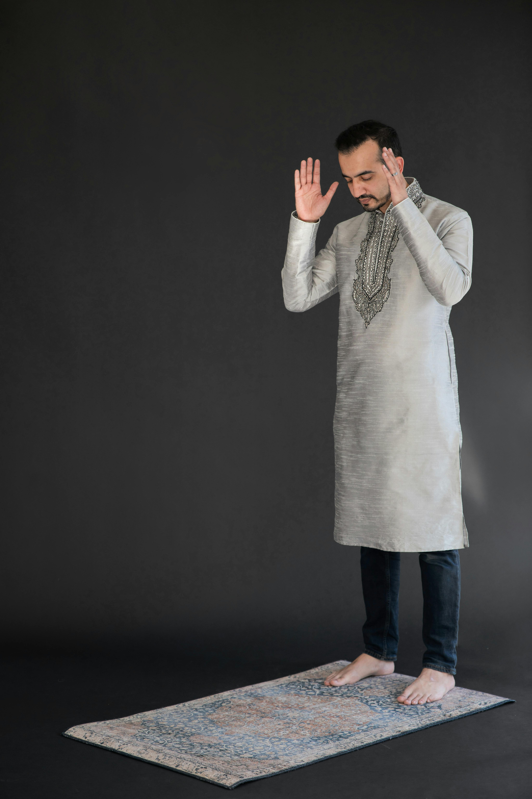
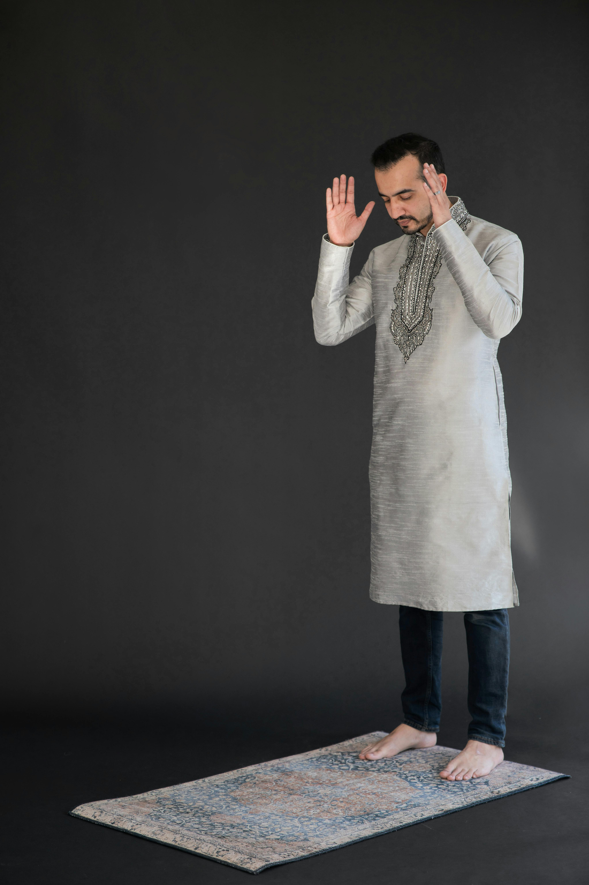

Say: "Allahu Akbar" while raising your hands.
| Prayer | Time |
|---|---|
| Fajr | 05:00 |
| Dhuhr | 12:30 |
| Asr | 15:45 |
| Maghrib | 18:15 |
| Isha | 19:45 |
Say: "Allahu Akbar" while raising your hands.
Recite Surah Al-Fatiha and another Surah silently in standing position.
Say: "Subhana Rabbiyal Azeem" (Glory be to my Lord, the Almighty) 3 times.
Say: "Subhana Rabbiyal A’la" (Glory be to my Lord, the Most High) 3 times.
Say: "Rabbighfir li" (My Lord, forgive me).
Recite the testimony of faith:
"At-tahiyyatu lillahi was-salawatu wat-tayyibat. Assalamu ‘alaika ayyuhan-nabiyyu wa rahmatullahi wa barakatuhu.
Assalamu ‘alaina wa ‘ala ‘ibadillahis-salihin. Ashhadu an la ilaha illallahu wa ashhadu anna Muhammadan ‘abduhu wa rasuluhu."
Translation: "All greetings, prayers, and pure words are for Allah. Peace be upon you, O Prophet, and the mercy of Allah and His blessings. Peace be upon us and upon the righteous servants of Allah. I bear witness that there is no god but Allah, and I bear witness that Muhammad is His servant and Messenger."
Turn your head right and left, saying: "Assalamu Alaikum wa Rahmatullah."